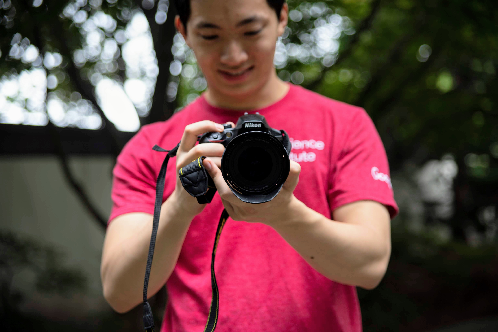
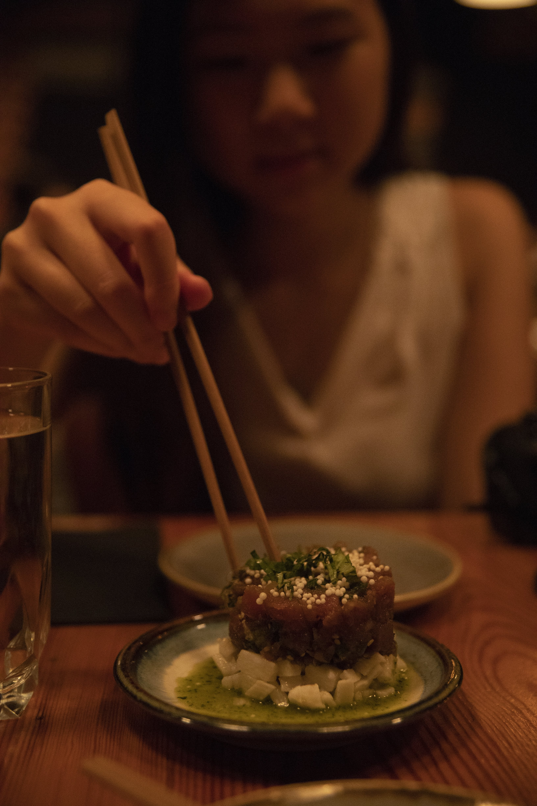
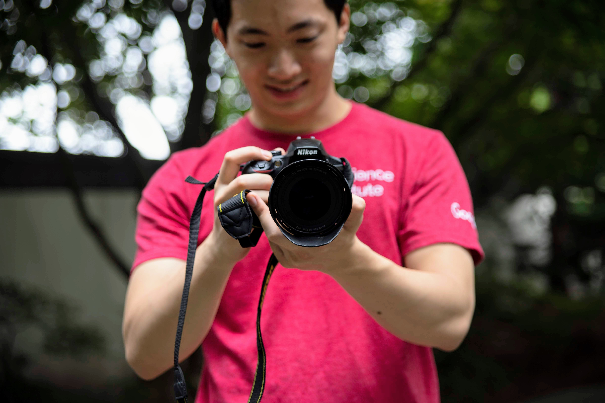
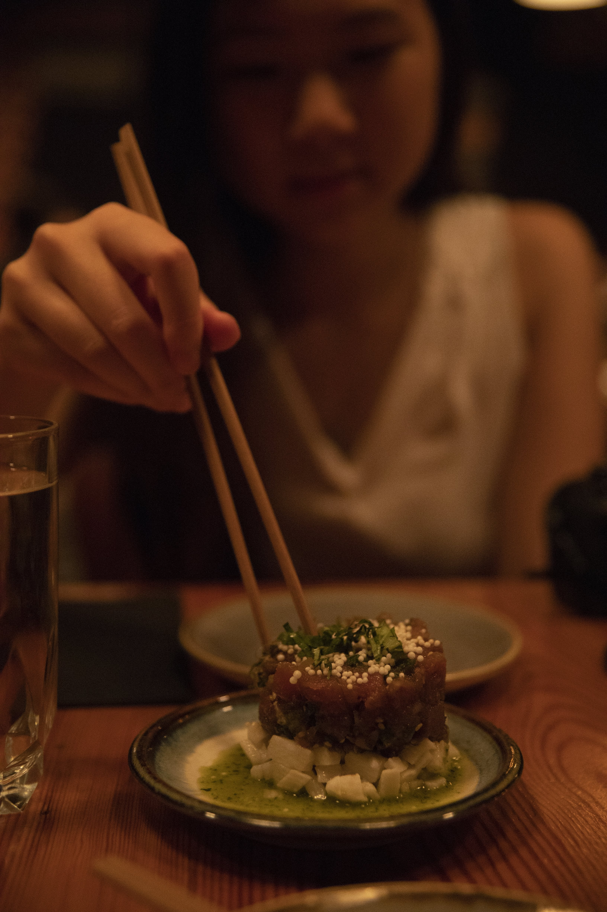
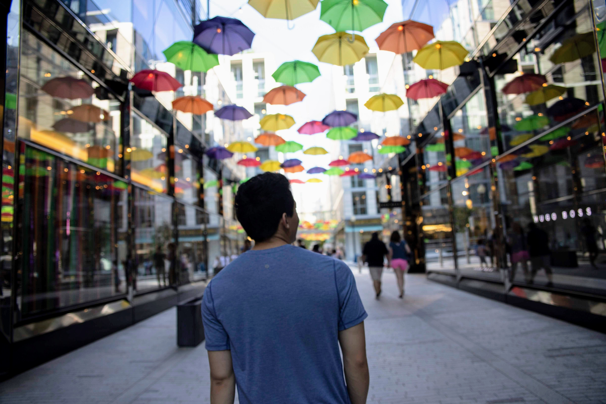
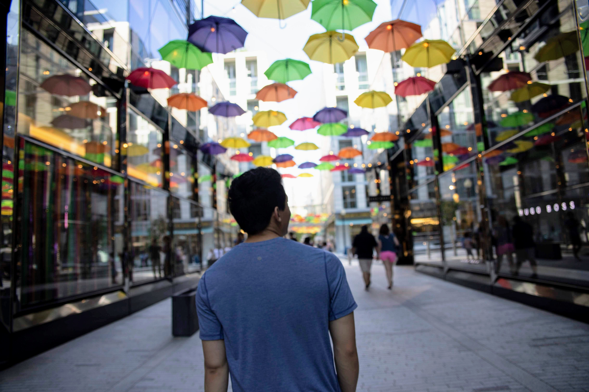
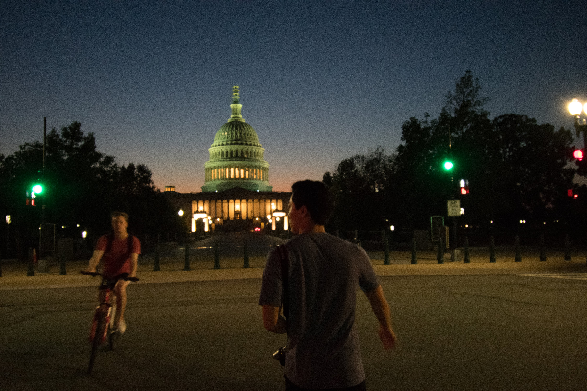
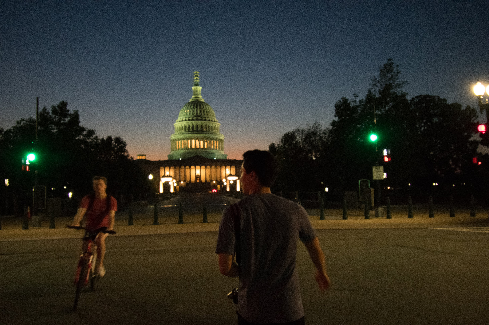
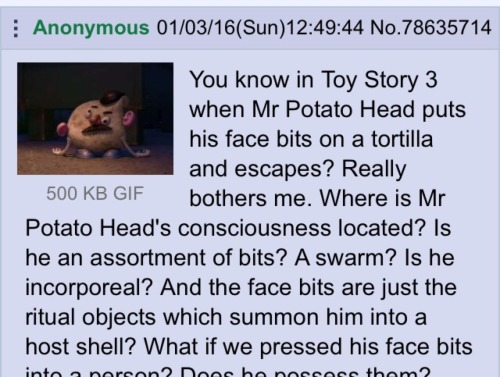

karisa tzeng
i design both on- and offline spaces, through software UX to event production. i build communities for people to share knowledge and act upon their ideas. i can connect you to other cool people working in tech, design, entrepreneurship, and beyond.
say hi on Messenger@karisatzeng or hello@karisatzeng.com
residing: Boston, MA, US until Dec 16
i'm excited for:
- Scout Studio's team retreat to New Hampshire
- Karisa's (Second) Fall (Short) Film Fest Friday (on Oct 26!)
values
- thoughtfulness
- independence
- confidence
- professionalism
present
conference logistics coordinator
@Scout Design Studio // since Sep 2018
source speakers from global design community for Scout’s 2nd annual design conference, Interventions. establish Scout Interventions brand and 2019 theme with conference team of 5.
events specialist
@NU Sci // since Sep 2018
coordinate NU Sci's events and issue distribution with the Marketing Team. manage Facebook, Instagram, and Twitter accounts for magazine outreach across Boston science community.
host
film fests / movie nights // since high school
i've hosted informal movie nights since high school because i love gathering people and meeting new people (friends bring new friends!). it's not the best social type of event because we're watching a screen, but it's still fun to experience a visual adventure together. i usually invite random people and encourage people to get out of their comfort zone / usual friend groups to meet others. i also love short films, which i first started watching through shortoftheweek.com in 2014. i'm currently combining my interests in short films and my movie nights to bring to Boston a biweekly short film festival.
interests:
technology and possibility, travel and exploration, hacker/maker communities and collaboration. adventure, photography, short films, animal welfare, healthcare, tennis, swimming.
adventures
Washington, D.C., US | Oct 5–8 | with: Heng Juat Tan
a recent trip to D.C. during Columbus Day Weekend. photos of me taken by Juat, rest are taken by me.

 




 



 

shoutouts
KALLY LYONNAIS AND RAVEN GUENNEGUEZ FOR HELPING SET UP OCT 26 FILM FEST
CHRISTINA ALLAN FOR BRINGING HER DELICIOUS HOMEMADE OATMEAL CHOCOLATE CHIP COOKIES TO SCOUT HQ
JAMIE GUO AND NIKITA DSOUZA FOR ALWAYS BEING THERE FOR ME
ideas
to think about
- 
for fun
- taking a photo of each street named after a state in Washington, D.C.
- marble run competition
film fest
text "filmfest" to 857-701-8975 to keep in the loop
Karisa's Fall (Short) Film Fest Fridays
Boston, MA, US | Oct – Dec 2018
next: 369 Huntington Ave | Oct 26, 7-9p
focusing on CREATIVE STYLE
- animation
- stop-motion
&c, where behind the scenes is just as cool as the film itself!
films shown:
- Rabbit and Deer
- Writer's Block
- Gulp
- Making of Gulp
- Dot
- The Duck
- Tusk
- The History of the World
- The Pizza Chef - Pozzo
- The Pizza Chef - Puh
- The Bigger Picture
- One Small Step